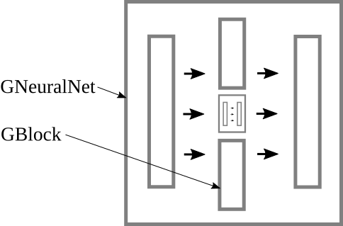

|
Back to the table of contents Previous Next Neural network examplesThis document gives examples for writing code to use the neural network class in Waffles. Let's begin with an overview of the most important classes:

Logistic regressionLogistic regression is fitting your data with a single layer of logistic units. Here are the #includes that we are going to need for this example: #include <WClasses/WActivation.h> #include <WClasses/WMatrix.h> #include <WClasses/WNeuralNet.h> #include <WClasses/WRand.h> #include <WClasses/WTransform.h> We are going to need some data, so let's load some data from an ARFF file. Let's use Iris, a well-known dataset for machine learning examples:
WMatrix data;
data.loadArff("iris.arff");
"data" is a 150x5 matrix. Next, we need to divide this data into a feature matrix (the inputs) and a label matrix (the outputs): WDataColSplitter cs(data, 1); // the "iris" dataset has only 1 column of "labels" const WMatrix& inputs = cs.features(); const WMatrix& outputs = cs.labels(); "inputs" is a 150x4 matrix of real values, and "outputs" is a 150x1 matrix of categorical values. Neural networks typically only support continuous values, but the labels in the iris dataset are categorical, so we will convert them to use a real-valued representation (also known as a categorical distribution, a one-hot representation, or binarized representation): WNominalToCat nc; nc.train(outputs); WMatrix* pRealOutputs = nc.transformBatch(outputs); pRealOutputs points to a 150x3 matrix of real values. Now, lets further divide our data into a training portion and a testing portion: WRand r(0); WDataRowSplitter rs(inputs, *pRealOutputs, r, 75); const WMatrix& trainingFeatures = rs.features1(); const WMatrix& trainingLabels = rs.labels1(); const WMatrix& testingFeatures = rs.features2(); const WMatrix& testingLabels = rs.labels2();Now, we are ready to train a layer of logistic units that takes 4 inputs and gives 3 outputs. The activation function is specified as a separate layer: WNeuralNet nn; nn.add(new WBlockLinear(4, 3)); nn.add(new WBlockLogistic(3));To train our model, we will create an optimizer. We wil use stochastic gradient descent (SGD). We also set the learning rate here: WRand(0); WSGDOptimizer optimizer(nn, rand); optimizer.setLearningRate(0.05); optimizer.optimizeWithValidation(trainingFeatures, trainingLabels); Let's test our model to see how well it performs: double sse = nn.measureLoss(optimizer.weights(), testingFeatures, testingLabels); double mse = sse / testingLabels.rows(); double rmse = sqrt(mse); std::cout << "The root-mean-squared test error is " << to_str(rmse) << "\n"; Finally, don't forget to delete pRealOutputs: delete(pRealOutputs); Or, preferably: std::unique_ptr<WMatrix> hRealOutputs(pRealOutputs); ClassificationThe previous example was not actually very useful because root-mean-squared only tells us how poorly the neural network fit to our continuous representation of the data. It does not really tell us how accurate the neural network is for classifying this data. So, instead of transforming the data to meet the model, we can transform the model to meet the data. Specifically, we can use the WAutoFilter class to turn the neural network into a classifier: WNeuralNetLearner learner; learner.nn().add(new WBlockLinear(4, 3)); learner.nn().add(new WBlockLogistic(3)); WAutoFilter af(&learner, false); // false means the auto-filter does not need to "delete(&nn)" when it is destroyed. Now, we can train the auto-filter using the original data (with nominal labels). We no longer need to explicitly train the neural network because when we train the auto-filter, it trains the inner model. af.train(inputs, outputs); The auto-filter automatically filters the data as needed for its inner model, but ultimately behaves as a model that can handle whatever types of data you have available. In this case, it turns a neural network into a classifier, since "outputs" contains 1 column of categorical values. So, now we can obtain the misclassification rate as follows: double mis = af.sumSquaredError(inputs, outputs); std::cout << "The model misclassified " << to_str(mis) << " out of " << to_str(outputs.rows()) << " instances.\n"; Why does a method named "sumSquaredError" return the total number of misclassifications? Because it uses Hamming distance for categorical labels, which reports a squared-error of 1 for each misclassification. (Note that if you are training a big network with big data, then efficiency may be critical. In such cases, it is generally better to use the approach of transforming the data to meet the model, so that it does not waste a lot of time transformaing data during training.) Stopping criteriaThe WNeuralNetOptimizer::optimizeWithValidation method divides the training data into a training portion and a validation portion. The default uses 65% for training and 35% for validation. Suppose you wanted to change this ratio to 60/40. This would be done as follows: optimizer.optimizeWithValidation(features, labels, 0.4); By default, training continues until validation accuracy does not improve by 0.2% over a window of 100 epochs. If you wanted to change this to 0.1% over a window of 10 epochs, then you could do this prior to calling optimizeWithValidation: optimizer.setImprovementThresh(0.001); optimizer.setWindowSize(10);You can also train for a set number of epochs instead of using validation. For example, to optimize for 1000 epochs: optimizer.setEpochs(1000); optimizer.optimize(features, labels);By default, optimize will run stochastically through the entire set of training samples each epoch. To use a mini-match instead, set the batch size and (optionally) the number of batches per epoch before calling optimize: optimizer.setBatchSize(25); optimizer.setBatchesPerEpoch(4); SerializationYou can write your neural network to a file:
WDom doc;
doc.setRoot(nn.serialize(&doc));
doc.saveJson("my_neural_net.json");
Then, you can load it from the file again:
WDom doc;
doc.loadJson("my_neural_net.json");
WNeuralNet* pNN = new WNeuralNet(doc.root());
MNISTA popular test for a neural network is the MNIST dataset. (Click here to download the data.) And, here is some code that trains a neural network with this data:
#include <iostream>
#include <cmath>
#include <WClasses/WApp.h>
#include <WClasses/WError.h>
#include <WClasses/WNeuralNet.h>
#include <WClasses/WActivation.h>
#include <WClasses/WTransform.h>
#include <WClasses/WTime.h>
#include <WClasses/WVec.h>
using namespace WClasses;
using std::cerr;
using std::cout;
int main(int argc, char *argv[])
{
// Load the data
WMatrix train;
train.loadArff("/somepath/data/mnist/train.arff");
WMatrix test;
test.loadArff("/somepath/data/mnist/test.arff");
WMatrix rawTestLabels(test, 0, test.cols() - 1, test.rows(), 1);
// Preprocess the data
WDataPreprocessor dpFeat(train,
0, 0, // rowStart, colStart
train.rows(), train.cols() - 1, // rowCount, colCount
false, false, true, // allowMissing, allowNominal, allowContinuous
-1.0, 1.0); // minVal, maxVal
dpFeat.add(test, 0, 0, test.rows(), test.cols() - 1);
WDataPreprocessor dpLab(train,
0, train.cols() - 1, // rowStart, colStart
train.rows(), 1, // rowCount, colCount
false, false, true, // allowMissing, allowNominal, allowContinuous
-1.0, 1.0); // minVal, maxVal
dpLab.add(test, 0, test.cols() - 1, test.rows(), 1);
WMatrix& trainFeatures = dpFeat.get(0);
WMatrix& trainLabels = dpLab.get(0);
WMatrix& testFeatures = dpFeat.get(1);
// Make a neural network
WNeuralNet nn;
nn.add(new WBlockLinear(28 * 28, 80), new WBlockTanh(80),
new WBlockLinear(80, 30), new WBlockTanh(30),
new WBlockLinear(30, 10), new WBlockTanh(10));
// Print some info
cout << "% Training patterns: " << to_str(trainFeatures.rows()) << "\n";
cout << "% Testing patterns: " << to_str(testFeatures.rows()) << "\n";
cout << "% Topology:\n";
cout << nn.to_str("% ") << "\n";
cout << "@RELATION neural_net_training\n";
cout << "@ATTRIBUTE misclassification_rate real\n";
cout << "@ATTRIBUTE elapsed_time real\n";
cout << "@DATA\n";
// Train
WRand rand(0);
WSGDOptimizer optimizer(nn, rand, &trainFeatures, &trainLabels);
optimizer.setLearningRate(0.01);
double starttime = WTime::seconds();
for(size_t epoch = 0; epoch < 10; epoch++)
{
double mis = nn.measureLoss(optimizer.weights(), testFeatures, rawTestLabels);
cout << to_str((double)mis / testFeatures.rows()) << "," << to_str(WTime::seconds() - starttime) << "\n";
cout.flush();
optimizer.optimizeEpoch();
}
return 0;
}
Here are the results that I get: % Training patterns: 60000 % Testing patterns: 10000 % Topology: % [WNeuralNet: 784->10, Weights=65540 % 0) [WBlockLinear: 784->80, Weights=62800] % 1) [WBlockTanh: 80->80, Weights=0] % 2) [WBlockLinear: 80->30, Weights=2430] % 3) [WBlockTanh: 30->30, Weights=0] % 4) [WBlockLinear: 30->10, Weights=310] % 5) [WBlockTanh: 10->10, Weights=0] % ] @RELATION neural_net_training @ATTRIBUTE misclassification_rate real @ATTRIBUTE elapsed_time real @DATA 0.9243,0.4613778591156 0.0622,10.968685865402 0.0509,21.50560092926 0.0422,32.133005857468 0.0406,42.690910816193 0.043,53.197825908661 0.0337,63.745694875717 0.037,74.263633966446 0.0367,85.197949886322 0.0338,95.829666852951 The left-most column shows that we get 332 misclassifications in less than 4 minutes of training. You can get much better accuracy using bigger layers, but then training will take longer too. If you want better results, and you are willing to wait for days to get your results, you can use a neural network with a bigger topology:
// Make a neural network
WNeuralNet nn;
nn.add(new WBlockConv({28, 28}, {5, 5, 32}, {28, 28, 32}));
nn.add(new WBlockLeakyRectifier(28 * 28 * 32));
nn.add(new WBlockMaxPooling2D(28, 28, 32));
nn.add(new WBlockConv({14, 14, 32}, {5, 5, 32, 64}, {14, 14, 1, 64}));
nn.add(new WBlockLeakyRectifier(14 * 14 * 64));
nn.add(new WBlockMaxPooling2D(14, 14, 64));
nn.add(new WBlockLinear(7 * 7 * 64, 1000));
nn.add(new WBlockLeakyRectifier(1000));
nn.add(new WBlockLinear(1000, 10));
nn.add(new WBlockLeakyRectifier(10));
Results: % Training patterns: 60000 % Testing patterns: 10000 % Topology: % [WNeuralNet: 784->10, Weights=6449506 % 0) [WBlockConv: 784->25088, Weights=25632] % 1) [WBlockLeakyRectifier: 25088->25088, Weights=0] % 2) [WBlockMaxPooling2D: 25088->6272, Weights=0] % 3) [WBlockConv: 6272->12544, Weights=3276864] % 4) [WBlockLeakyRectifier: 12544->12544, Weights=0] % 5) [WBlockMaxPooling2D: 12544->3136, Weights=0] % 6) [WBlockLinear: 3136->1000, Weights=3137000] % 7) [WBlockLeakyRectifier: 1000->1000, Weights=0] % 8) [WBlockLinear: 1000->10, Weights=10010] % 9) [WBlockLeakyRectifier: 10->10, Weights=0] % ] @RELATION neural_net_training @ATTRIBUTE misclassification_rate real @ATTRIBUTE elapsed_time real @DATA 0.8968,417.57785105705 0.0151,9315.7933959961 0.0118,18262.10059309 0.0089,27112.086796045 0.008,35959.635168076 0.0069,44808.642307997 0.0069,53653.528531075 0.0067,62494.467343092 0.0066,71333.166102171 0.0059,80169.731641054 0.0055,89011.055896997 0.0059,97851.162302971 0.0058,106692.02508712 0.0052,115535.61306 Training more directlyIf you want more fine-grained control, you can train your neural network manually, instead of using one of the pre-built optimizers. Here are some changes to the training section of the previous example to train the neural network with more direct calls:
// Train
WRand rand(0);
WVec weights(nn.weightCount());
WVec grad(nn.weightCount());
grad.fill(0.0);
nn.initWeights(rand, weights);
double learningRate = 0.01;
double momentum = 0.0;
WRandomIndexIterator ii(trainFeatures.rows(), rand);
double starttime = WTime::seconds();
for(size_t epoch = 0; epoch < 10; epoch++)
{
double mis = nn.measureLoss(weights, testFeatures, rawTestLabels);
cout << to_str((double)mis / testFeatures.rows()) << "," << to_str(WTime::seconds() - starttime) << "\n";
cout.flush();
ii.reset();
size_t index;
while(ii.next(index))
{
nn.forwardProp(weights, trainFeatures[index]);
nn.computeBlame(trainLabels[index]);
nn.backpropagate(weights);
grad *= momentum;
nn.updateGradient(weights, grad);
weights.addScaled(learningRate, grad);
}
}
return 0;
If you want to get more direct than that, you will probably have to start digging into the code itself. I have worked hard to keep the code clean and easy to read, but I would welcome suggestions for improving it. Previous Next Back to the table of contents |